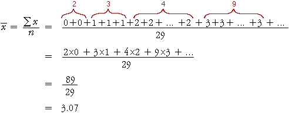

Frequency table
All graphical displays of discrete data are based on the frequencies of the different values — i.e. the number of times each value occurs in the data set.
In data sets with a small number of possible counts (say 20 or fewer), a frequency table is a useful summary in its own right. Unlike frequency tables for continuous data, no grouping is involved so no information is lost.
Calculating the mean from a frequency table
The mean of a discrete data set can be easily calculated from a frequency table.
The following frequency table describes the marks in a short test for 29 students.
| Mark x |
Frequency ƒx |
||
|
|
||
| total | 29 |
|---|
The mean mark in the group of students is found by adding the marks from all 29 students then dividing by 29,
